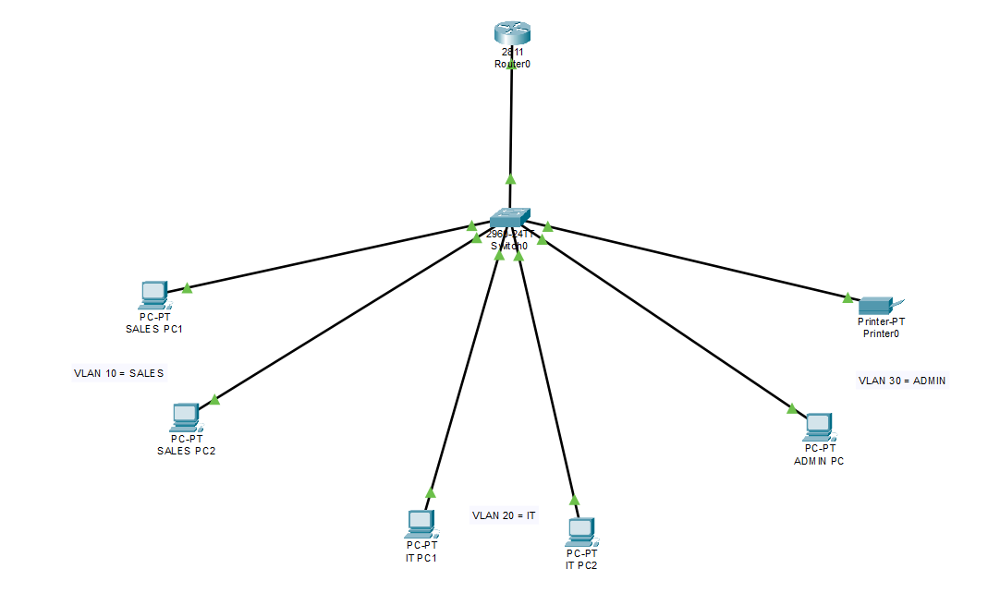

02 / PERSONAL PROJECT · CISCO PACKET TRACER
Small Office Network Configuration and VLAN Segmentation
Configured a simulated three-department office network with VLAN segmentation, 802.1Q trunking, router-on-a-stick routing, and DHCP. Verified cross-VLAN connectivity and network printer reachability using ping tests.

ENVIRONMENT
- Simulator Cisco Packet Tracer 7.3.1
- Router Cisco 2811 with Cisco IOS
- Switch Cisco 2960 with VLAN trunking
- PCs 6 hosts across three departments
- Topology Router-on-a-stick inter-VLAN routing
TOPOLOGY
- Sales VLAN 10 2 PCs, switch access ports Fa0/1 and Fa0/2
- IT VLAN 20 2 PCs, switch access ports Fa0/3 and Fa0/4
- Admin VLAN 30 1 PC + 1 network printer, switch access ports Fa0/5 and Fa0/6
- Trunk Switch Gig0/1 is an active 802.1Q trunk carrying VLANs 1, 10, 20, 30
- Router subinterfaces Fa0/0.10 (192.168.1.1/24 - Sales), Fa0/0.20 (192.168.2.1/24 - IT), Fa0/0.30 (192.168.3.1/24 - Admin)
DHCP
- DHCP pools configured for Sales, IT, and Admin on the router
- .1 through .10 excluded in each subnet
- Six automatic bindings verified: Sales (192.168.1.12, 192.168.1.13), IT (192.168.2.11, 192.168.2.12), Admin (192.168.3.11, 192.168.3.12)
- Router advertises corresponding gateway IPs; DNS server 8.8.8.8 configured in DHCP pool examples
NETWORK DESIGN
VLAN and Subnet Configuration
| VLAN | Department | Subnet | Gateway | Access Ports |
|---|---|---|---|---|
| 10 | Sales | 192.168.1.0/24 | 192.168.1.1 | Fa0/1, Fa0/2 |
| 20 | IT | 192.168.2.0/24 | 192.168.2.1 | Fa0/3, Fa0/4 |
| 30 | Admin | 192.168.3.0/24 | 192.168.3.1 | Fa0/5, Fa0/6 |
IMPLEMENTATION
What I configured
VLAN Creation and Port Assignment
- Created VLAN 10 (Sales) on the Cisco 2960 switch
- Created VLAN 20 (IT) on the Cisco 2960 switch
- Created VLAN 30 (Admin) on the Cisco 2960 switch
- Assigned switch access ports: Fa0/1 and Fa0/2 to VLAN 10
- Assigned switch access ports: Fa0/3 and Fa0/4 to VLAN 20
- Assigned switch access ports: Fa0/5 and Fa0/6 to VLAN 30
- Configured Gig0/1 as an active 802.1Q trunk
- VLANs 1, 10, 20, and 30 are active and forwarding on the trunk
Router-on-a-Stick (Router Subinterfaces)
- Configured router physical interface Fa0/0 — link is up
- Subinterface Fa0/0.10: encapsulation dot1Q 10, IP 192.168.1.1/24 (Sales gateway)
- Subinterface Fa0/0.20: encapsulation dot1Q 20, IP 192.168.2.1/24 (IT gateway)
- Subinterface Fa0/0.30: encapsulation dot1Q 30, IP 192.168.3.1/24 (Admin gateway)
- This is router-on-a-stick inter-VLAN routing configuration
DHCP Configuration
- Configured DHCP pools for Sales, IT, and Admin on the router
- Excluded .1 through .10 in each subnet
- DHCP address assignment verified using show ip dhcp binding with six automatic bindings
- Sales: 192.168.1.12, 192.168.1.13
- IT: 192.168.2.11, 192.168.2.12
- Admin: 192.168.3.11, 192.168.3.12
- Router advertises corresponding gateway IPs
- DNS server 8.8.8.8 was configured in the DHCP pool examples
- Internet access and DNS resolution were not tested — stated only verified facts
Verification and Results
- Ping from a Sales PC to IT VLAN address 192.168.2.11: initial test 3/4 responses, repeated test 4/4
- Ping from a Sales PC to Admin VLAN address 192.168.3.11: initial test 3/4 responses, repeated test 4/4
- Ping from a Sales PC to printer address 192.168.3.12: initial test 3/4 responses, repeated test 4/4
- The initial first-packet timeout is consistent with ARP resolution in Packet Tracer but is not definitively diagnosed; subsequent tests succeeded
- These tests verify IP reachability to the tested devices
- Do not claim actual printing was tested or that all possible VLAN-to-VLAN pairs were tested
Lessons Learned
- Separation of layer 2 VLAN assignment from layer 3 routing
- How trunking carries multiple VLANs over a single link
- How DHCP distributes addresses per subnet with proper exclusions
- How to verify rather than assume connectivity with ping tests
EVIDENCE GALLERY


Download Project (.pkt)
Cisco Packet Tracer project file for the Small Office Network Configuration and VLAN Segmentation lab.
Required: Cisco Packet Tracer 7.3.1 or later to open this file.
This is a personal, simulated networking lab in Cisco Packet Tracer, not a production network deployment or paid IT role. The .pkt file contains the Packet Tracer project configuration with three VLANs, router-on-a-stick routing, and DHCP pools.